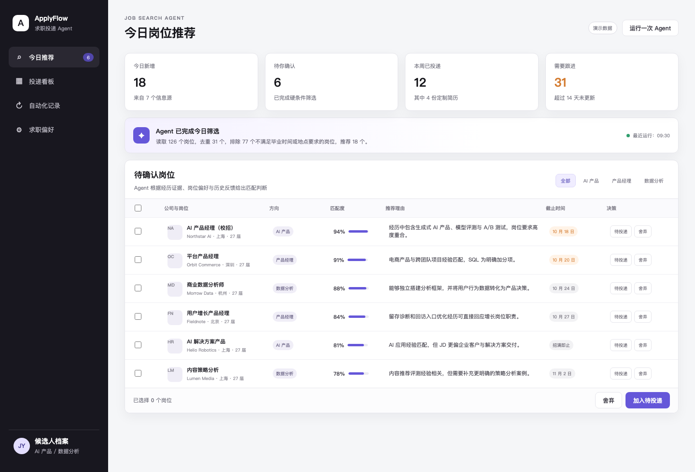

ApplyFlow｜求职投递 Agent（作品集）
一句话介绍产品
面向校招求职者的网页端工作台：由 Agent 完成岗位发现、匹配判断和重复申请任务，用户只在岗位决策与最终提交等关键节点进行确认。
产品核心功能
- 岗位发现与推荐：增量整理多源岗位，完成去重与硬条件筛选，结合候选人经历、求职偏好和历史反馈输出匹配度与推荐理由。
- 申请自动化：对确认投递的岗位生成简历修改 Diff，衔接浏览器辅助填写并同步投递结果；定期检查长期未更新的申请与后续节点。

主界面：Agent 推荐结果、匹配理由、截止时间与批量决策
工作流结构
技术栈
- 前端：HTML + CSS + JavaScript，完成岗位推荐、批量决策、申请看板与自动化任务交互。
- Agent：Codex 负责任务拆解、岗位匹配、反馈更新、简历适配与浏览器任务编排。
- 数据与执行：飞书承载结构化记录与进度同步；浏览器操作辅助网申与状态检查。